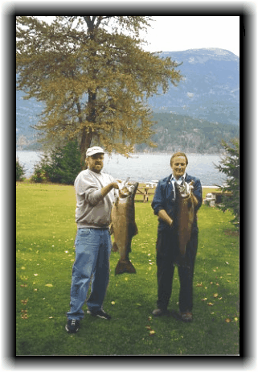

<table class="tableborder" width="80%" border="0" cellspacing="0" cellpadding="0" align="center" bgcolor="#D9EDFD">
	<tr>

		<td class="tbborder" width="40%" bgcolor="#D9EDFD">
			&nbsp;</td>

		<td width="100%">
			<br>
			<br>
			<p>
				<b>
					<font size=6>&nbsp;Fishing</p>
			</b>
			<font size=4>
				<ul>
					<li>Fish on Kootenay Lake</li>
					<li>Some of the best fishing in British Columbia</li>
					<li>Catch Gerrard Rainbow, Kokanee, Dolly Varden (bull trout); Some of world's largest Dollys and Rainbows live here</li>
					<li>Fishing licenses available</li>
					<li>Freezer facility for catch available</li>
					<li>Fishing charters through:
						<a href="http://reeladventuresfishing.com" target="_new">Reel Adventures Fishing Charters</a>
					</li>


				</ul>
				<br>
		</td>


	</tr>

</table>
</td>
</tr>
</table>